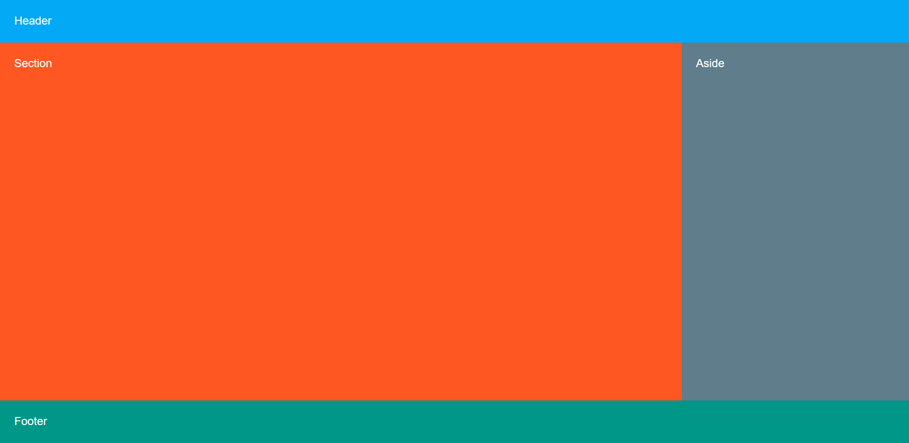
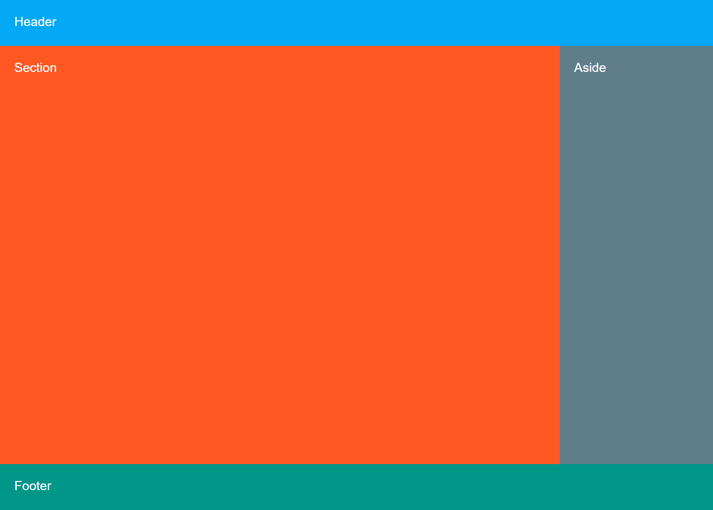

المطلوب في التكليف
أنشئ توزيع الصفحة بالشكل والألوان المرجعية، واستخدم CSS Grid فقط. يجب أن يمتد التخطيط إلى كامل مساحة الصفحة، ويحتوي على Header وSection وAside وFooter.
المطلوب بجوار HTML المعاينة، ثم مقارنة النتيجة قبل قواعد CSS وبعدها. الشرح العربي من اليمين إلى اليسار، وكل HTML وCSS إنجليزي من اليسار إلى اليمين.
أنشئ توزيع الصفحة بالشكل والألوان المرجعية، واستخدم CSS Grid فقط. يجب أن يمتد التخطيط إلى كامل مساحة الصفحة، ويحتوي على Header وSection وAside وFooter.
المقتطف أدناه هو HTML المستخدم في ملف المعاينة المحلي، وليس مقتطفًا من المصدر الرسمي. أُدرج لربط قواعد CSS بعناصر الصفحة المعروضة.
<section class="task"><h2>Task 02</h2><div class="grid2"><div class="head" data-label="Header"></div><div class="section" data-label="Section"></div><div class="aside" data-label="Aside"></div><div class="foot" data-label="Footer"></div></div></section>البنية المحلية نفسها قبل إضافة قواعد حل هذا التكليف.
البنية المحلية نفسها بعد تطبيق تنسيق المعاينة.


CSS الكامل لهذا التكليف، مستقل وباتجاه القراءة من اليسار إلى اليمين.
.grid2 {
height: 100vh;
display: grid;
grid-template-columns: minmax(0, 2fr) minmax(220px, 1fr);
grid-template-rows: 90px 1fr 90px;
grid-template-areas:
"header header"
"section aside"
"footer footer";
}
.grid2 > :nth-child(1) { grid-area: header; background: #03a9f4; }
.grid2 > :nth-child(2) { grid-area: section; background: #ff5722; }
.grid2 > :nth-child(3) { grid-area: aside; background: #607d8b; }
.grid2 > :nth-child(4) { grid-area: footer; background: #009688; }
.grid2 > * {
padding: 28px;
color: #fff;
}تحدد grid-template-areas أسماء المناطق ومكانها في الصفوف. ثم تربط grid-area كل عنصر باسمه لتوزيع Header وSection وAside وFooter.
.grid2يستهدف العناصر التي تحمل اسم الفئة في المحدد.
.grid2 > *علامة > تقصر المطابقة على الابن المباشر. يستهدف العناصر التي تحمل اسم الفئة في المحدد.
.grid2 > :nth-child(1)يختار العنصر بحسب ترتيبه بين الإخوة؛ الرقم يحدد الموضع المطلوب. علامة > تقصر المطابقة على الابن المباشر. يستهدف العناصر التي تحمل اسم الفئة في المحدد.
.grid2 > :nth-child(2)يختار العنصر بحسب ترتيبه بين الإخوة؛ الرقم يحدد الموضع المطلوب. علامة > تقصر المطابقة على الابن المباشر. يستهدف العناصر التي تحمل اسم الفئة في المحدد.
.grid2 > :nth-child(3)يختار العنصر بحسب ترتيبه بين الإخوة؛ الرقم يحدد الموضع المطلوب. علامة > تقصر المطابقة على الابن المباشر. يستهدف العناصر التي تحمل اسم الفئة في المحدد.
.grid2 > :nth-child(4)يختار العنصر بحسب ترتيبه بين الإخوة؛ الرقم يحدد الموضع المطلوب. علامة > تقصر المطابقة على الابن المباشر. يستهدف العناصر التي تحمل اسم الفئة في المحدد.
height: 100vhpadding: 28pxdisplay: gridgrid-template-columns: minmax(0, 2fr) minmax(220px, 1fr)grid-template-rows: 90px 1fr 90pxgrid-template-areas: "header header"
"section aside"
"footer footer"grid-area: headerbackground: #03a9f4color: #fff{}تجمع الأقواس قواعد المحدد وتحدد بداية القاعدة ونهايتها.
:تفصل النقطتان بين اسم الخاصية وقيمتها.
;تنهي الفاصلة المنقوطة تصريح CSS.
,تفصل الفاصلة بين القيم أو المحددات بحسب موضعها.
>تعني الابن المباشر في المحدد، وقد تفصل خطوط Grid عند استخدامها داخل قيمة.
fr, px, vhوحدات للمقاس أو النسبة أو الزمن؛ مثل px للبكسل وfr لجزء من المساحة المتاحة.
.grid2 {يستهدف العناصر التي تحمل اسم الفئة في المحدد.
height: 100vh;تحدد ارتفاع العنصر.
display: grid;تحدد طريقة ترتيب العنصر وأبنائه، مثل Flex أو Grid.
grid-template-columns: minmax(0, 2fr) minmax(220px, 1fr);تحدد الأعمدة وعرض كل عمود في Grid.
grid-template-rows: 90px 1fr 90px;تحدد الصفوف وارتفاع كل صف.
grid-template-areas:ترسم خريطة الصفوف والأعمدة بأسماء مناطق.
"header header"يكمل قاعدة التنسيق السابقة.
"section aside"يكمل قاعدة التنسيق السابقة.
"footer footer";يكمل قاعدة التنسيق السابقة.
}يغلق كتلة قواعد CSS التي بدأها المحدد السابق.
.grid2 > :nth-child(1) { grid-area: header; background: #03a9f4; }يختار العنصر بحسب ترتيبه بين الإخوة؛ الرقم يحدد الموضع المطلوب. علامة > تقصر المطابقة على الابن المباشر. يستهدف العناصر التي تحمل اسم الفئة في المحدد. تربط العنصر بمنطقة مسماة. تحدد خلفية العنصر، ومنها اللون أو التدرج. يغلق القاعدة في نهاية السطر.
.grid2 > :nth-child(2) { grid-area: section; background: #ff5722; }يختار العنصر بحسب ترتيبه بين الإخوة؛ الرقم يحدد الموضع المطلوب. علامة > تقصر المطابقة على الابن المباشر. يستهدف العناصر التي تحمل اسم الفئة في المحدد. تربط العنصر بمنطقة مسماة. تحدد خلفية العنصر، ومنها اللون أو التدرج. يغلق القاعدة في نهاية السطر.
.grid2 > :nth-child(3) { grid-area: aside; background: #607d8b; }يختار العنصر بحسب ترتيبه بين الإخوة؛ الرقم يحدد الموضع المطلوب. علامة > تقصر المطابقة على الابن المباشر. يستهدف العناصر التي تحمل اسم الفئة في المحدد. تربط العنصر بمنطقة مسماة. تحدد خلفية العنصر، ومنها اللون أو التدرج. يغلق القاعدة في نهاية السطر.
.grid2 > :nth-child(4) { grid-area: footer; background: #009688; }يختار العنصر بحسب ترتيبه بين الإخوة؛ الرقم يحدد الموضع المطلوب. علامة > تقصر المطابقة على الابن المباشر. يستهدف العناصر التي تحمل اسم الفئة في المحدد. تربط العنصر بمنطقة مسماة. تحدد خلفية العنصر، ومنها اللون أو التدرج. يغلق القاعدة في نهاية السطر.
.grid2 > * {علامة > تقصر المطابقة على الابن المباشر. يستهدف العناصر التي تحمل اسم الفئة في المحدد.
padding: 28px;تحدد المساحة الداخلية بين المحتوى والحد.
color: #fff;تحدد لون النص أو المحتوى.
}يغلق كتلة قواعد CSS التي بدأها المحدد السابق.